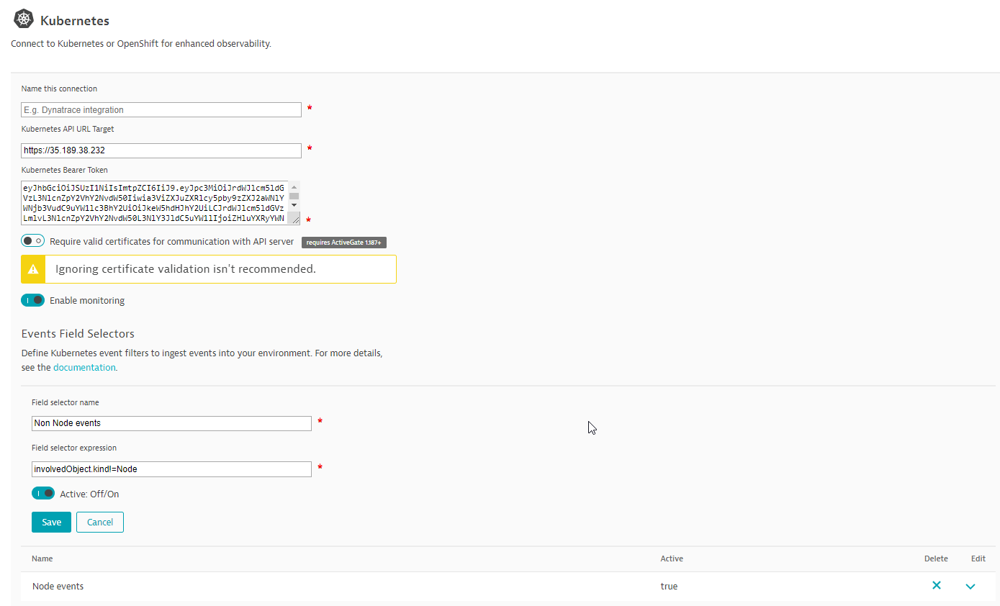

このリポジトリには、Hands-On Kubernetes Sessionのラボが含まれています。このハンズオンでは、Google Kubernetes Engine (GKE)を使用しますが、他のPaaSプラットフォームでも使用可能です。
ハンズオンの目的は、参加者のためにステップを自動化し、シームレスにすることです。
事前準備
- DynatraceのAccount. フリートライアルの申し込み here
- Google Cloud アカウント
- Chrome ブラウザ
学習内容
- Helm Chartを介したDynatrace OperatorのKubernetesへの展開
- DynatraceでのKubernetes統合のセットアップ
- Dynatraceでのアーリーアクセス機能フラグの有効化
- DynatraceでのKubernetesビューの発見
Google Cloud Platform アカウントの登録
https://cloud.google.com/free/ にアクセスして、既存のGoogleアカウントで無料のGCPアカウントを登録してください。
Googleアカウントをお持ちでない方は、新規にご登録いただくことも可能です。
サインアップすると、GCPアカウントに関連付けられた無料のクレジットが得られます。12ヶ月分＋30,000円
GCPコンソールへのログインはこちらから行えます。
Kubernetes Engine APIの有効化
また、Kubernetes Engine APIでAPI Billingを有効にする必要があります。
GKEインスタンスをセットアップする際に、請求書作成ページが表示されるはずです。
表示されない場合は、こちらの手順に従ってください。
クラウドシェルの起動
右上の「ターミナル」アイコンをクリックします。
クラウドベースのターミナルのようなものがページの下に表示されます。
GKEクラスタの設定を開始します。
3. GKE クラスタの作成
以下のコマンドで、Ubuntuが動作するk8sworkshopという名前のGKEクラスターをGKEで作成します。 また、Dynatrace Activegate用のコンピュートVMも作成します。Dynatrace ActivegateはKubernetesとの連携に使用します。
gcloud container clusters create k8sworkshop --image-type=ubuntu --zone australia-southeast1-a
gcloud compute instances create dynatrace-activegate --image-family ubuntu-1604-lts --image-project ubuntu-os-cloud --zone australia-southeast1-a
これで、GKEクラスタが動作するようになります。
kubectl get nodesを実行すると、ノードの数が表示されます。
Kubernetesインテグレーションの公式説明書こちらの通り、まずEnvironment Activegateをセットアップする必要があります。
Dynatrace-Activegate ターミナルに SSH で入り、Activegate をインストールする。
- Google Cloud の左のナビゲーションバーで、Compute Engine -> VM instances に移動します。
- dynatrace-activegate**の行にあるSSHボタンをクリックして、インスタンスにSSH接続します。
- Dynatrace内で、左メニューの「Deploy Dynatrace」をクリックします。
- ページ下部の「Install Activegate」をクリックします。
- "Linux "をクリックします。
- 手順2をコピーし、ターミナルに貼り付ける。
- 手順4をコピーして、"sudo"(rootとしてインストール)をターミナルに追加する

- 手順4をコピーして、"sudo"(rootとしてインストール)をターミナルに追加する
インストールが完了すると、「Deployment Status」にActivegateが表示されます。

K8S概要ダッシュボードの設定
[設定] -> [プロセスとコンテナ] -> [プロセスグループの検出] -> [クラウドアプリケーションとワークロードの検出の有効化]に進みます。
公式のdocumentation pageに記載されている手順を自動化し、API URLとベアラートークンをAPI経由で自動的に提供しました。メインのCloud Shellターミナルに戻り、以下を入力します。
wget -O- https://raw.githubusercontent.com/Dynatrace-APAC/Workshop-Kubernetes/master/setup-k8s-ui.sh | bash
上記の結果を受けて、Settings -> Cloud and Virtualization -> Kubernetesに値を入力します。

- GKE K8S」など、接続の名前を付けます。
- Kubernetes APIのURLを入力してください。
- SSHターミナルからKubernetes APIのURLをコピーします。
- 3.Kubernetes Bearer Tokenの入力
- SSHターミナルからBearer Tokenをコピーします。
- "Require valid certificates for communication with API server "を無効にする。
- 別のイベントフィールドセレクタを追加
- フィールドセレクターの名前を以下のようにしてください。
Hipster shop - フィールドセレクタの式を以下のようにしてください。
metadata.namespace=hipster-shop - Save and Click on Connect
接続に成功したら、左メニューの「Kubernetes」をクリックし、KubernetesのUIを見てみましょう。

- Google Cloud Consoleの左のナビゲーションバーにあるKubernetes Engine -> Applicationsに進みます。
- "Deploy From Marketplace "をクリックします。
- 上記の検索欄で「Dynatrace」と検索します。
- Dynatrace OneAgent Operator」をクリックし、「Configure」をクリックします。
- 以下のフィールドに入力します。
- API URL DynatraceのURLをコピーして、最後に "/api "を追加します。
- API Token Settings -> Integration -> Dynatrace APIから作成します。
- Access problem and event feed, metrics, and topology toggle を有効にする。
- 設定情報の書き込みを有効にするのトグル（次のステップのActivegateの設定に必要）。
- PaaS token Settings -> Integration -> Platform as a Service から作成します。
GCPコンソールに値をコピーする
- Deployをクリックします。
完了したら、左パネルの「ホスト」をクリックすると、接続されているK8Sノード（3ノード）が表示されます。
# Hipster Shopの立ち上げ
今回のハンズオンでは、GoogleのサンプルアプリケーションであるHipster Shopを起動する必要があります。
Hipster Shopの実行
wget -O- https://raw.githubusercontent.com/Dynatrace-APAC/Workshop-Kubernetes/master/deploy.sh | bash
デプロイされたら、GCPからフロントエンドのエンドポイントを見つけることができます（Kubernetes Engine -> Services & Ingress）。
実行すると、露出したfrontend-external IPにアクセスしてHipster Shopに行くことができます。

サービスの自動検出
Dynatraceの「トランザクションとサービス」で、自動検出された5つのサービスを見ることができます。
いくつかのサービスは発見されていますが、Hipster Shop's Service architectureと一致しないものもあることがわかります。 Hipster Shopは最先端のテクノロジー（GPRCなど）を使用しており、Dynatraceはクラウドの絶え間ない進化をサポートしています。

OneAgentでの追加機能の利用
OneAgentは急速に変化しているため、アーリーアクセスの機能はデフォルトでは自動的に有効になっていません。 これは、本番環境に影響を与えるような不測の事態を避けるためです。今回のワークショップでは、これらの機能を有効にすることができます。Settings -> Service-side service monitoring -> Deep Monitoring -> New Oneagent Featuresにアクセスします。
Global Settingsで、以下の機能フラグを有効にします。これらは異なるページにあるので、ページを切り替える必要があります。
検索フィルターバーを使用して、"GRPC "を検索することができます。
2つの追加NodeJS機能フラグを含め、以下の機能がすべて有効になっていることを確認してください。
OneAgents の機能を有効にするには、ポッドの再起動が必要です。以下のコマンドを実行して、ポッドを再起動します。
kubectl delete pods --all -n hipster-shop
Dynatraceに戻り、「トランザクションとサービス」にアクセスして、更新されたサービスのリストを確認します。
":8080 "をクリックし、続いてService Flowをクリックすると、サービスが自動的に検出され、上のアーキテクチャ図と一致することがわかります。
Kubernetes View内の様々な機能（Cluster Utilization、Cluster Workloads、K8S Eventsなど）を確認できます。

Kubernetes Clusterの利用状況を分析する
- マウスオーバーして、CPUとMemoryの使用率をMin / Maxで表示します。
- Analyze Nodesをクリックすると、各ノードの詳細が表示されます。
Kubernetes Cluster Workloadsの分析
- Kubernetesコントローラに分散して実行されているワークロードとポッドに注目してください

Kubernetesのイベントを分析する
- イベントの種類に注目 BackOff, Unhealthy

Kubernetesの名前空間を分析する
- hipster-shop**をクリックして、各種kubernetesサービス（クラウドアプリケーション）にドリルダウンします。
クラウドアプリケーションをクリックして探索
- それぞれのサービスをクリックすると、そのサービスを支える技術が見えてきます。

このラボを楽しんでいただき、お役に立てれば幸いです。ご意見、ご感想をお待ちしております。